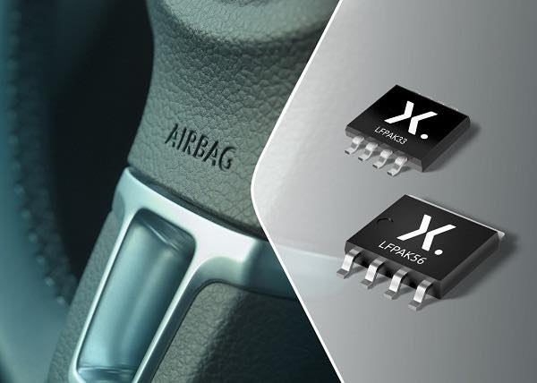

Nexperia Crisis Affects the Chipmaker Industry, Leading to Auto Shutdowns


A business dispute within Nexperia, a Chinese-owned semiconductor maker based in the Netherlands, has caused major problems in the global auto industry years after the pandemic-era chip shortage. This shows how fragile supply chains are.
The unrest, which comes from a struggle for command of Nexperia's business, has hindered the supply of vital parts for power and automotive electronics.Honda had to stop making cars at one of its main assembly plants in Mexico, where it makes the popular HR-V crossover for North American markets, because the traffic was so bad.Industry experts say that other car companies that rely heavily on Nexperia's power-management and microcontroller chips, which are needed for everything from engine systems to basic safety features, are also worried about the deadlock.
“This is the kind of disruption companies dread because there’s almost no backup supply,” said a senior automotive analyst in Detroit. “When a single chokepoint collapses, assembly lines feel it immediately.”
The crisis has put Europe in a tough spot. Nexperia, a Dutch company owned by a Chinese company, is at the center of the growing competition between Beijing and Washington over semiconductor technology. European officials have been stuck between China's business interests and U.S. national security concerns, which has made it harder to negotiate emergency supplies and rules.

Nexperia is working on a temporary fix, but automakers want things to stay the same.
Early signs point to the possibility that the worst effects of the shortage may be over. While the corporate disagreement is being worked out privately, Nexperia's owners and European authorities have begun to work together on temporary governance measures to bring production back to normal. A number of auto suppliers said they expect shipments to slowly start up again, even though they warned that regular operations would take weeks to recover.
Honda plans to reopen the affected factory in Mexico as soon as inventory levels return to normal. The company mostly relies on Nexperia for mid-tier power semiconductors. Other companies, especially American and European automakers, have started making backup plans to avoid more shutdowns.
Experts say that the experience shows that there are even bigger problems with the system that will still be there after the current crisis is over. Automakers still rely on a small number of specialized semiconductor makers, which makes them vulnerable to trade barriers, political conflicts, and disagreements within the companies themselves.
A semiconductor supply-chain researcher based in Brussels says that the industry will probably go through something like this again in the future. "Europe will stay in the middle as long as the West and China are at a standstill over technology."
The industry is waiting to see if Nexperia's internal management dispute will be resolved and if this latest upheaval will make automakers switch chip suppliers more quickly.


Koepka’s Leap of Faith: What Comes Next After LIV Golf Exit
DECEMBER 24, 2025

Skenes and Skubal Win Cy Young Awards as Future Uncertainty Grows
NOVEMBER 12, 2025


Technology

SoftBank Sells Nvidia Stake for $5.8B, Shifts Focus to OpenAI
SoftBank made a lot more money in the first half of its fiscal year after selling its entire stake in Nvidia for $5.8 billion. This was part of a strategic shift toward OpenAI.
TECHNOLOGY BY NOVEMBER 10, 2025

Watchdog Group Urges OpenAI to Pull Sora 2 App
Public Citizen told OpenAI to take down their Sora 2 video program because they were worried that the AI-powered app would violate people's rights to their likeness, spread deepfakes online, and endanger democracy
TECHNOLOGY BY NOVEMBER 11, 2025

U.S.–UK Technology Deal Paused as Trade Talks Stall
The U.S. has paused its $40 billion Technology Prosperity Deal with the UK, citing regulatory differences and trade barriers affecting technology and advanced goods amid ongoing negotiations.
TECHNOLOGY BY DECEMBER 17, 2025